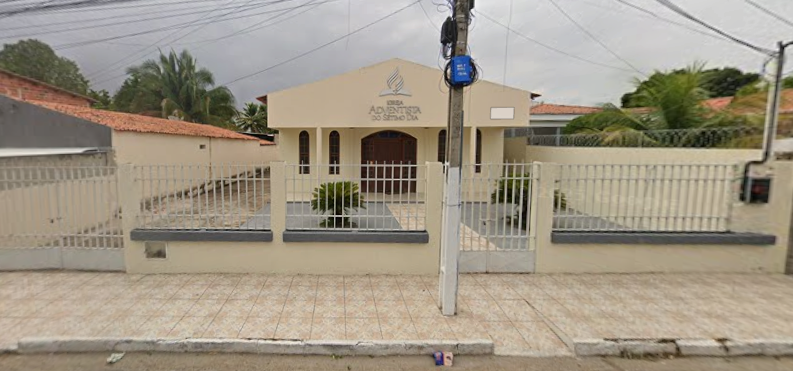

Explore
Dízimos e Ofertas
Sua contribuição ajuda a manter nossa igreja e a expandir a obra de Deus em nossa comunidade. Agradecemos sua generosidade.
Ofertar Agora
Junte-se a nós nos cultos e atividades — todos são bem-vindos.
Fale ConoscoSua contribuição ajuda a manter nossa igreja e a expandir a obra de Deus em nossa comunidade. Agradecemos sua generosidade.
Ofertar Agora